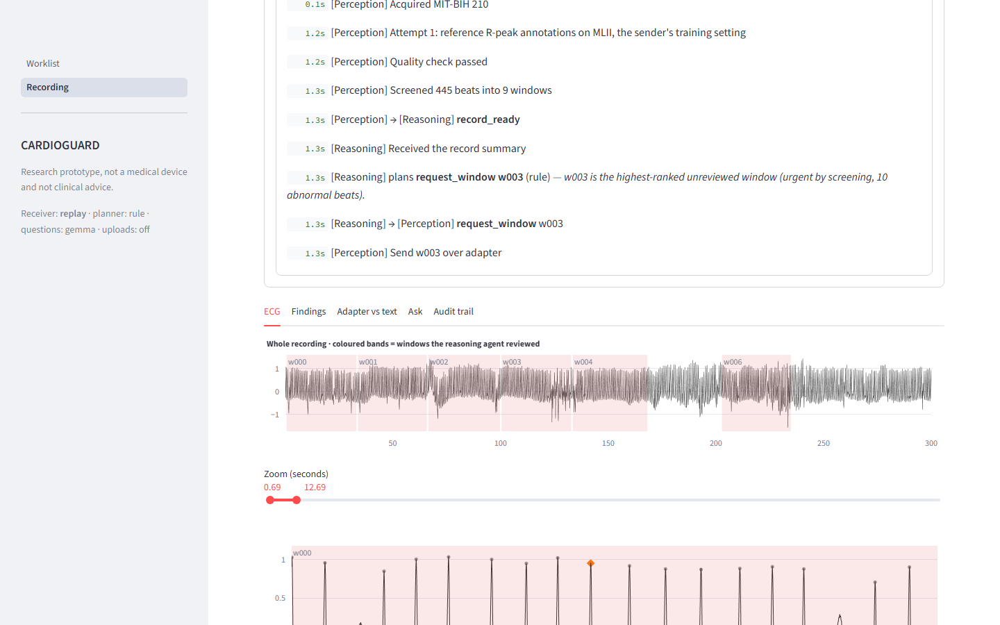
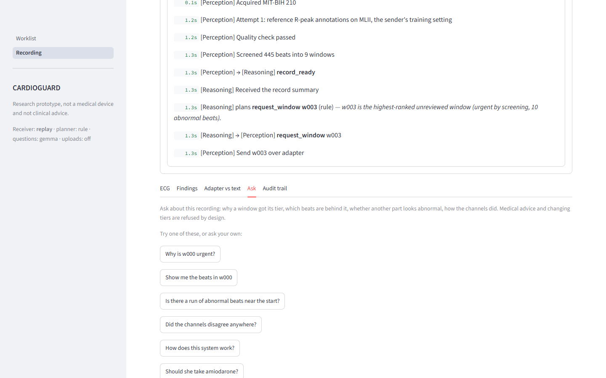
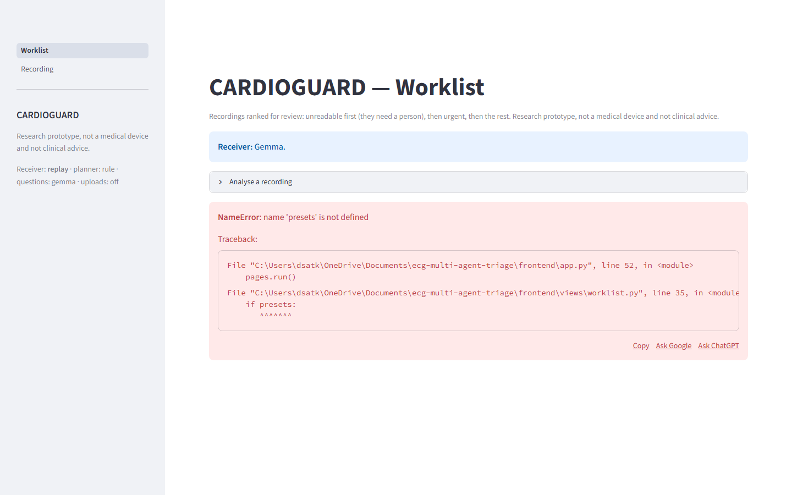
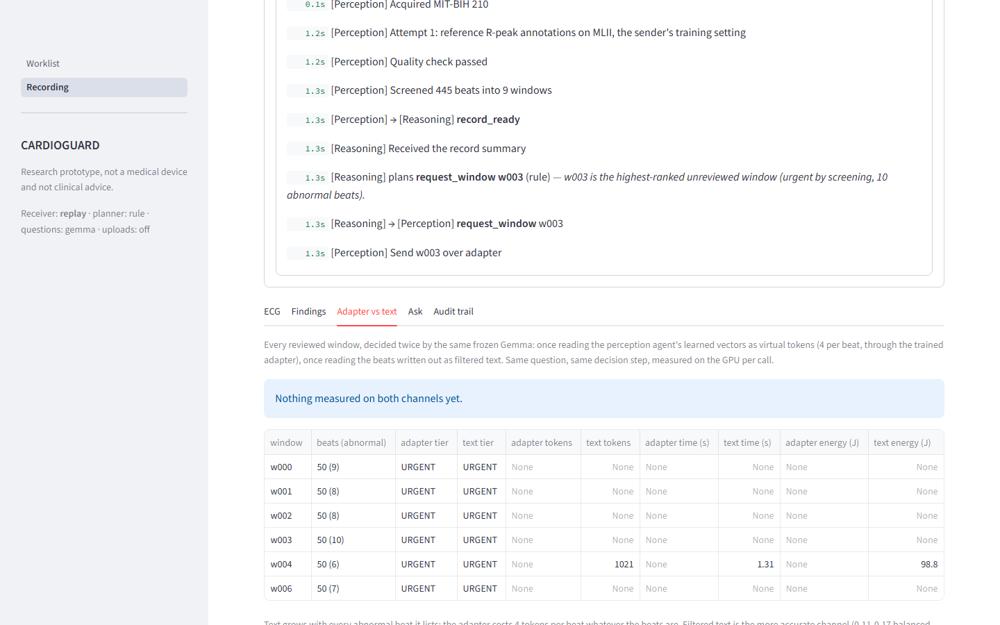
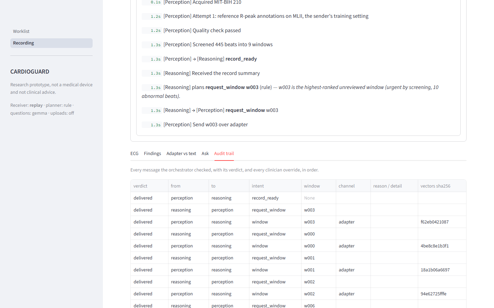
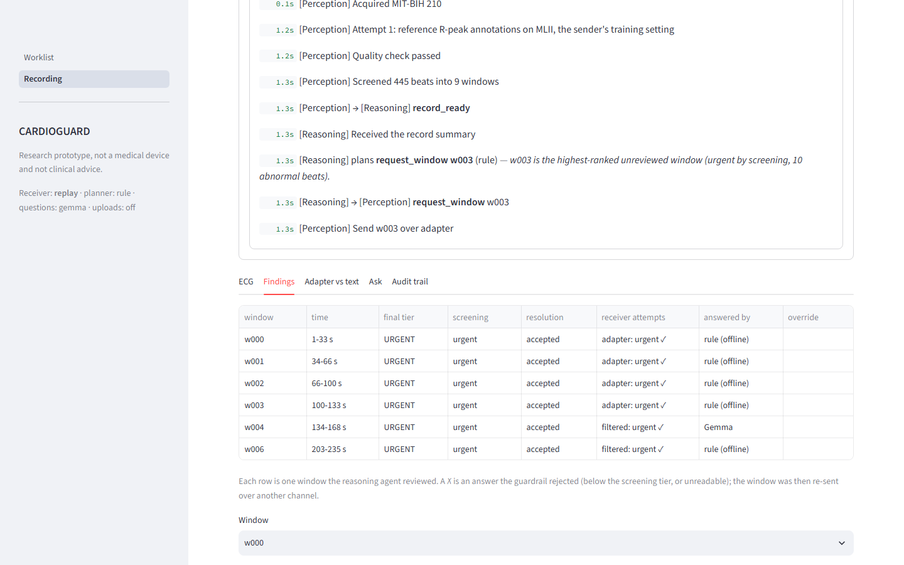
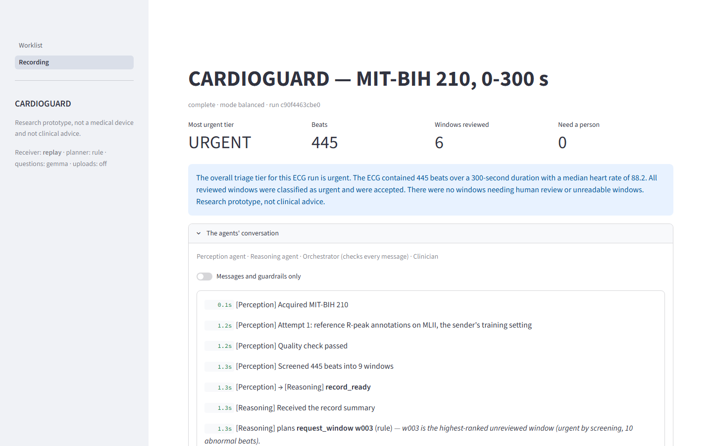

Clinical Worklist Homepage
The CARDIOGUARD dashboard displaying patient recordings ranked by clinical urgency (unreadable first, urgent, priority, routine) with MIT-BIH status badges.
View Full Size →
ECG Signal & Beat Annotations
Interactive zoomable ECG waveform chart with color-coded window tier bands and perception agent beat markings (N, S, V, F, Q) verified against cardiologist annotations.
View Full Size →
Clinician Q&A & Safety Guardrails
Clinician query interface demonstrating deterministic safety guardrail refusals for medical advice and medication questions before reaching the language model.
View Full Size →
Stress Scenarios & Fault Tolerance
Simulation interface for adverse signal events (noise bursts, clipping, electrode disconnects) showing how perception agent routes damaged signals to human review.
View Full Size →
Adapter vs Text Comparison
Quantitative benchmarking tab evaluating prompt tokens, latency, and GPU energy between learned virtual-token vectors and filtered text representations.
View Full Size →
Audit Trail & Multi-Agent Log
Complete orchestrator audit trail showing every inter-agent message, intent, channel verification, vector sha256 checksums, and clinician triage overrides.
View Full Size →
Findings Analytics & Explanations
Window-by-window analysis with clinical guidelines, classification justifications, source labels (live/replay/rule), and clinician override capability.
View Full Size →
Agent Execution Trace
Detailed chronological execution trace showing typed messages, intent verification, orchestrator safety checks, planning decisions, and timestamped actions.
View Full Size →